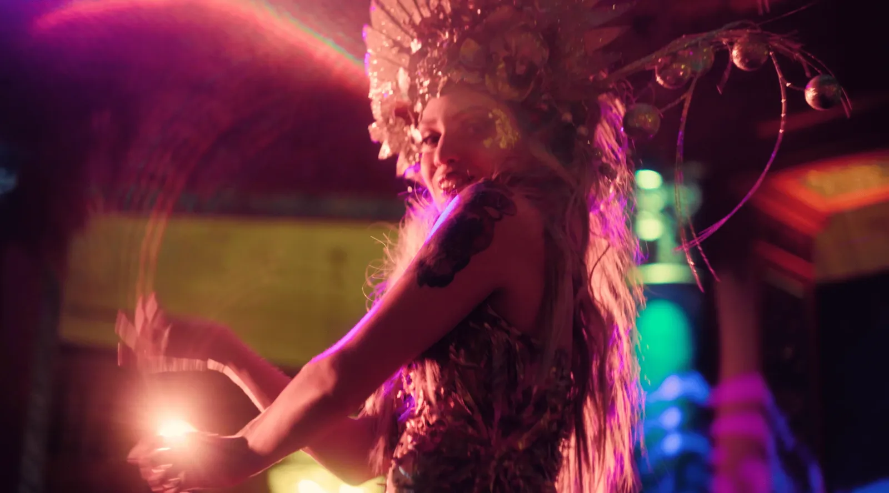

Delice Show
Version courte, univers artistique 45 sec
Version longue, préparation + show 2 min
À propos du projet
Anniversaire privée haut de gamme d'une Monégasque, au Circé à Beaulieu-sur-Mer. Delice Show était prestataire artistique de la soirée : chorégraphies, mises en scène surprises, décor entièrement créé pour l'occasion. La mission : capter la journée entière, de la préparation jusqu'au démontage, pour en faire deux films qui servent à vendre la prestation. Une captation événementielle pensée comme outil commercial.
Équipe Technique
Delice Show : du brief au résultat
01 · Objectif
Donner à Delice Show deux films utilisables comme outils de démarchage : une version courte plongée dans l'univers artistique de la soirée, et une version longue qui montre tout le travail de préparation en amont pour justifier la valeur de la prestation auprès de futurs clients.
02 · Contrainte
Faible luminosité tout au long de la soirée, éclairage scénique changeant, aucune prise ne peut être refaite. Journée de captation de 8-9h du matin jusqu'après minuit (montage du décor, préparation des artistes, show, démontage). Un seul opérateur, plusieurs caméras.
03 · Choix créatifs
Utilisation d'un objectif soviétique vintage Helios 44-2 : ses aberrations optiques et ses défauts d'image renforcent l'univers à part de la soirée plutôt que de le lisser. Étalonnage coloré, assumé, en accord avec la vision artistique de la cliente. Attention particulière aux moments-clés : les fées qui défilent entre les convives avec des cartes libérant des papillons à l'ouverture.
04 · Dispositif technique
- Durée : journée complète (préparation + show + démontage)
- Équipe : 1 opérateur, plusieurs caméras
- Optique principale : Helios 44-2 (soviétique vintage, grande ouverture)
- Post-production : 2 montages vidéo, retouches photos, étalonnage coloré
05 · Livrables
- Version courte (45 secondes) : univers artistique pur, pour vendre l'esthétique féerique
- Version longue (2 minutes) : préparation + show, pour montrer la valeur du travail en amont
- 3 capsules Reels (une par costume de la soirée) pour les réseaux sociaux
- Photos retouchées en lien avec les vidéos
Témoignage client
"Sacha est un professionnel extrêmement talentueux. Sa patience, son regard artistique et la musicalité de ses montages font de lui notre plus grand atout pour vendre nos prestations artistiques." Un client avec lequel nous travaillons régulièrement.
Un anniversaire privée haut de gamme au Circé, Beaulieu-sur-Mer
La soirée : l'anniversaire d'une Monégasque dans un lieu très haut de gamme, le Circé à Beaulieu-sur-Mer, restaurant et espace événementiel. Delice Show était prestataire artistique de l'événement : ils avaient la charge de toute la partie show de la soirée. Chorégraphies, danses, mise en scène surprises, dont une sortie de danseurs depuis un gâteau géant. Le thème : un univers féerique, avec un décor entièrement créé pour l'occasion. L'un des moments clés : des fées qui circulent entre les convives avec des cartes spéciales que les invités ouvrent et d'où s'envolent des papillons.
Le travail réalisé avec la cliente a été méticuleux, en alignement avec une vision artistique forte et une exigence que l'on retrouve chez nous. On s'est bien entendus, et c'est un client avec qui on travaille régulièrement depuis.
Une version pour ressentir l'univers, une version pour comprendre le travail
Deux films avec deux intentions distinctes. La version courte (45 secondes) : on est plongés dans l'univers artistique de la soirée, uniquement les shows, l'ambiance, les costumes. Elle sert à vendre l'esthétique féerique de Delice Show à des prospects qui veulent exactement cet univers pour leur prochain événement.
La version longue (2 minutes) commence dès le matin : montage du décor, maquillage, habillage, répétitions, puis le show. Elle sert à montrer tout ce qui existe derrière la soirée et que les clients ne voient pas : l'organisation, la préparation, la logistique. Souvent, les gens ne comprennent pas pourquoi ce type de prestation a un certain tarif. Cette version répond à cette question sans avoir besoin de l'expliquer.
Helios 44-2 : les défauts comme choix esthétique
L'optique principale utilisée est un Helios 44-2, objectif soviétique vintage. Il ouvre grand, ce qui est utile dans la faible luminosité d'une soirée scénique. Mais c'est surtout son caractère optique qui a motivé le choix : ses aberrations, ses défauts de rendu, son bokeh en tourbillon. Plutôt que de chercher une image propre et neutre, on a utilisé ces imperfections pour renforcer l'univers à part de la soirée. Un univers féerique et hors-norme mérite une image qui ne ressemble pas à tout le monde.
L'étalonnage est coloré, assumé, en phase avec la vision artistique de la cliente. Pas de correction neutre.
De 8h du matin à après minuit, un opérateur, plusieurs caméras
Journée complète : arrivée en matinée pour capter le montage du décor, la préparation des artistes (maquillage, habillage, répétitions), puis toute la soirée jusqu'au démontage final. Un seul opérateur avec plusieurs caméras. Faible luminosité tout au long, ce qui impose des optiques à grande ouverture. Chaque moment est définitif : aucune prise ne peut être refaite une fois le show lancé.
Deux films, trois capsules Reels, des photos retouchées
Livrables : version courte (45 secondes), version longue (2 minutes), 3 capsules Reels (une par costume de la soirée) pour les réseaux sociaux de Delice Show, photos retouchées en lien avec les vidéos, le tout livré en 4K et HD.
Pour ce type de captation événementielle, le budget dépend du nombre de jours de captation, de montages demandés, des contraintes du lieu et du volume de livrables. Devis sur mesure selon votre événement.
Un événement à capter ? Soirée privée, spectacle, performance : donnez-lui une vidéo qui travaille pour vous bien après la date. Parlons-en.


Vous souhaitez un film similaire ?
Dites-nous ce que vous voulez construire. On vous dit comment on peut le faire.
Parlons-en